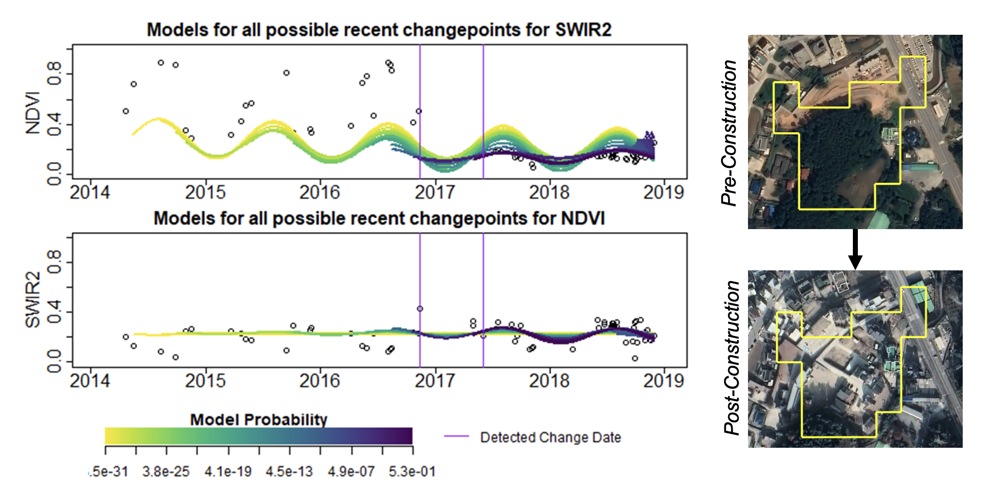
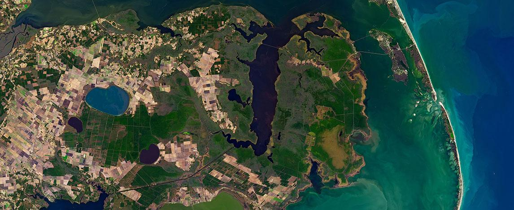

Current Research
This page contains a list of links to various research projects and work. Click on the link for the project to learn more about it.
MUTATED
Modeling and Understanding using Temporal Analysis of Transient Earth Data
This project works to automate broad-area search of multi-source satellite imagery to detect, monitor, and characterize the progression of anthropogenic or natural processes, such as heavy construction.
MUTATED Project
Capturing Variable Inundation in Carolina's Coastal Plain
This project works to capture transient and variable inundation in a difficult to map forested, coastal plain area in North Carolina to assess the impact of short-term inundation on biogeochemical cycles.
Coastal Wetland/Methane Project